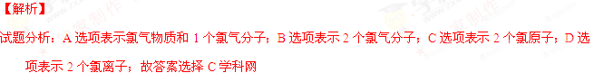
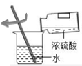
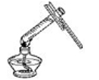
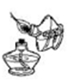
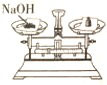

2016年北京市中考化学真题 · 选择题 第6、7、8、9、10题 · 对应解析
6．下列安全标志中，表示“禁止燃放鞭炮”的是
A | B | C | D |
【答案】B
【解析】
试题分析：A选项禁止吸烟标志；B选项为禁止燃放烟花爆竹标志；C选项为禁止火种的标志；D选项为禁止放置易燃物标志；故答案选择B
考点：安全标志
7．一些物质的pH范围如下，其中呈碱性的是
A．柠檬汁（2～3）B．橘子汁（3～4）
C．西瓜汁（5～6）D．牙膏（8～9）
【答案】D
【解析】
试题分析：溶液的酸碱性，用PH表示时，PH大于7显碱性，小于7溶液显酸性，等于7溶液显中性；故答案选择D
考点：溶液的酸碱性
8．2016年世界杯环境日，我国提出了“改善环境质量，推动绿色发展”的主题，下列做法不符合这一主题的是
A．尽量选择公共交通工具出行B．自带布袋购物
C．废酸液直接排入下水道D．减少使用一次性餐具
【答案】C
【解析】
试题分析：A．尽量选择公共交通工具出行，减少污染物的排放符合主题；B．自带布袋购物，减少塑料垃圾的产生，符合主题；C．废酸液直接排入下水道，会造成水污染，不符合改善环境质量，推动绿色和发展主题； D．减少使用一次性餐具，减少木材的使用，保护树木，符合主题；故答案选择C
考点：化学与环境
9．下列符号中，表示2个氯原子的是
A．Cl2B．2Cl2C．2ClD．2Cl-
【答案】C

考点：化学符号的含义10．下列实验操作正确的是
 |  |  |  |
A．稀释浓硫酸 | B．加热液体 | C．点燃酒精灯 | D．称量NaOH固体 |
【答案】A
【解析】
试题分析：A选项稀释浓硫酸酸入水且搅拌，是正确的操作；B选项加热试管中的液体时，试管中的液体不能超过其体积的三分之一；C选项点燃酒精灯要用火柴；D选项称量氢氧化钠腐蚀性的药品，要在托盘天平的两边放相同的玻璃仪器；故答案选择A
考点：基本操作